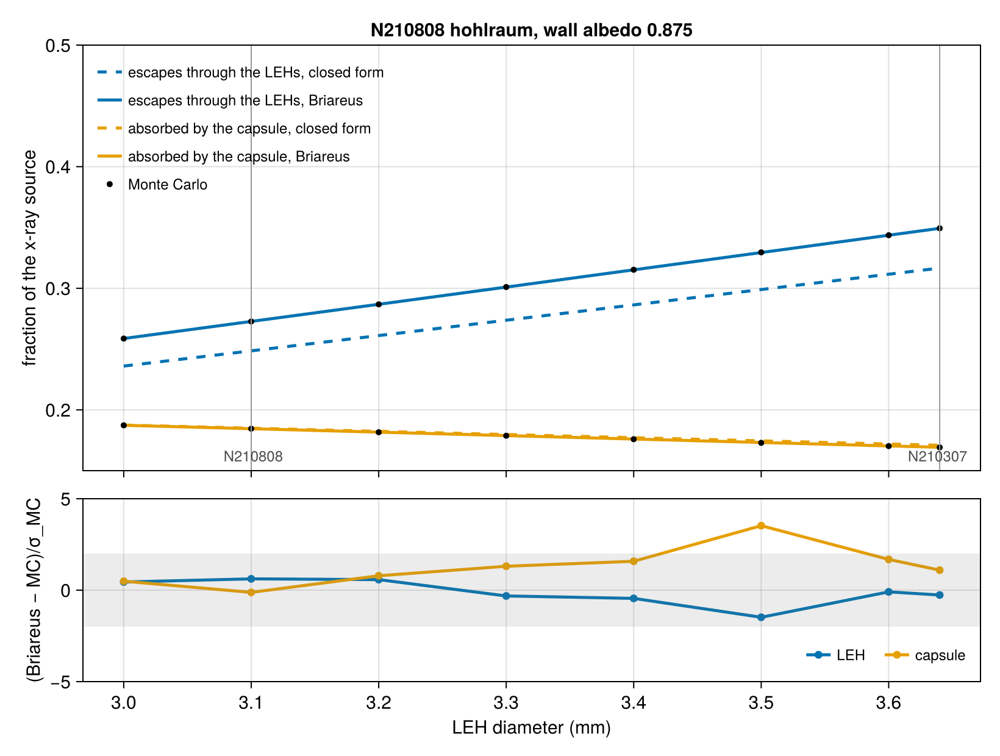

Entrance-hole size and the power balance
The x rays a hohlraum wall emits have three places to go: back into the wall, into the capsule, or out through the laser entrance holes (LEHs). The holes must be large enough to admit the beams, and radiation that reaches an open hole is lost. The HYBRID-E design that first reached ignition by Lawson's criterion, NIF shot N210808, shrank its LEHs from 3.64 mm to 3.1 mm in diameter (27% less area) and spent the radiation it saved on a lower peak power, 441 TW against the 487 TW of the 3.64 mm shot N210307, at a similar radiation temperature (Kritcher et al., Phys. Rev. E 106, 025201 (2022), Table I and Sec. II A).
The holes here are their nominal geometric size, open and static. In a shot the hole is not that simple: plasma blown off the LEH rim and the expanding wall ("gold bubble") close it down during the pulse and re-emit part of what reaches it, so its effective size, and the loss, are smaller than the as-built hole's. The fractions below are therefore the open-hole bound for each size, and their variation with size is what a geometric change buys before plasma effects.
This tutorial sweeps the LEH diameter of the N210808 hohlraum over realistic sizes, 3.0 to 3.6 mm, and computes the fraction of the x-ray source that escapes through the holes and the fraction the capsule absorbs. It checks Briareus's view factors and radiosity solve against an independent Monte Carlo photon walk in the exact geometry, compares both with the closed-form power balance that assumes a uniform flux, and then compares the predicted change in required power between the two shots with the published powers. Laser propagation is not modeled: the x-ray source is prescribed on the wall, so the sweep isolates the radiation power balance from beam clipping and pointing.
using Briareus
using CairoMakie
using LinearAlgebra
using Printf
using Random
CairoMakie.activate!(type = "png", px_per_unit = 2)
include(joinpath(pkgdir(Briareus), "docs", "literate", "_plotting.jl")) # figure helpers
set_theme!(fontsize = 15, linewidth = 2.5)The N210808 hohlraum
Kritcher et al. (Table I and Sec. II C) give the hohlraum: gold-lined depleted uranium, 6.4 mm in diameter and 11.24 mm long, with 3.1 mm LEHs, and a diamond capsule of inner radius 1.05 mm under an ablator 76–80 µm thick; we take an outer radius of 1.13 mm.
The albedos are engineering estimates, not shot data. The wall's is the Au-lined depleted-uranium wall loss (du_wall_loss: Lindl's gold scaling with the uranium's lower loss) at 300 eV, 6 ns into the pulse. Its time is the wall's effective age, the time it would have needed at today's temperature to store today's energy, $t_\mathrm{eff} = \int (T/T_\mathrm{now})^{5.32}\,dt$, as drive_history evaluates it: about 1 ns at 6 ns on the measured Dante history of the same design (N221204, Pak et al., Phys. Rev. E 109, 025203 (2024), Fig. 1; the foot stores little), not the 6 ns since the pulse began. The capsule takes the ablator default, 0.3. The conversion efficiency only scales the source, so the wall converts all of its laser power and every fraction below is a fraction of the x-ray source.
const N210808 = (radius = 3.2, length = 11.24, leh_diameter = 3.1, capsule_radius = 1.13)
const N210307_LEH = 3.64
pak = n221204_pulse()
measured = findall(isfinite, pak.dante1)
T6 = pak.dante1[findfirst(≈(6.0), pak.t)]
wt = [t <= 6.0 ? (T / T6)^(3.3 / 0.62) : 0.0 for (t, T) in zip(pak.t[measured], pak.dante1[measured])]
t_eff = sum(diff(pak.t[measured]) .* (wt[1:end-1] .+ wt[2:end]) ./ 2)
αw = albedo(du_wall_loss(), t_eff, 300.0)
@printf("effective wall age at 6 ns: %.2f ns\n", t_eff)
αc = 0.3
@printf("wall albedo %.4f, capsule albedo %.2f\n", αw, αc)
function n210808(leh_diameter; h = 0.4, wall_albedo = αw)
return hohlraum(; length = N210808.length, radius = N210808.radius,
leh_radius = leh_diameter / 2, capsule_radius = N210808.capsule_radius,
h, capsule_h = h / 3,
wall = Material(:Au; albedo = wall_albedo, conversion = 1.0),
capsule = Material(:ablator; albedo = αc, conversion = 0.0))
endeffective wall age at 6 ns: 1.07 ns
wall albedo 0.8750, capsule albedo 0.30The x-ray source
The beams heat two bands on each half of the wall: the inner cones (23.5° and 30°) near the waist, the outer cones (44.5° and 50°) near the LEHs. The source is uniform in each band, with the 33% inner-cone fraction of the N210808 peak (Kritcher et al., Sec. II A). The band positions are representative, not taken from the shot; the fractions change little with them (checked below).
Each wall element gets the source power of its overlap with the bands, so Briareus and the Monte Carlo reference both solve the problem with this piecewise-constant source.
const BANDS = ((fraction = 0.33, z = (0.6, 1.8)), # inner cones, |z| (mm)
(fraction = 0.67, z = (3.4, 4.6))) # outer cones
element_points(t, e) = [p for k in t.elem_tris[e]
for p in (t.tri_v0[k], t.tri_v0[k] + t.tri_e1[k], t.tri_v0[k] + t.tri_e2[k])]
"Axial and azimuthal extent of a wall element: (z0, z1, φa, φb)."
function wall_patch(t, e)
pts = element_points(t, e)
φc = atan(t.elem_centroid[e][2], t.elem_centroid[e][1])
δ = [rem2pi(atan(p[2], p[1]) - φc, RoundNearest) for p in pts]
return (extrema(p[3] for p in pts)..., φc + minimum(δ), φc + maximum(δ))
end
function wall_source(t; shift = 0.0)
P = zeros(nelements(t))
for e in elements(t, :wall)
z0, z1, φa, φb = wall_patch(t, e)
for band in BANDS, s in (-1, 1)
a, b = band.z .+ (band === BANDS[2] ? shift : 0.0)
lo, hi = s > 0 ? (a, b) : (-b, -a)
P[e] += band.fraction / 2 * max(0.0, min(z1, hi) - max(z0, lo)) / (b - a) *
(φb - φa) / 2π
end
end
return P
endBriareus
RadiationModel computes the view factors over the true cylinder, end-cap annuli, holes and sphere; solve returns the incident flux, and energy_balance splits the source into what each component absorbs, what escapes through each hole, and what the view factors lose (row sums short of one).
function briareus_fractions(leh_diameter; h = 0.4, closed = false, shift = 0.0)
t = n210808(leh_diameter; h)
model = RadiationModel(t; closed)
b = energy_balance(solve(model, wall_source(t; shift)))
return (; leh = (b.escaped[:leh_top] + b.escaped[:leh_bottom]) / b.source,
capsule = b.absorbed[:capsule] / b.source, lost = b.lost / b.source,
elements = nelements(t), target = t)
endThe closed-form power balance
If the incident flux $H$ were the same on every surface, the source would balance the wall's and capsule's absorption and the escape through the holes (Lindl et al., Phys. Plasmas 11, 339 (2004), Sec. IV):
\[S = H\left[(1-\alpha_w)A_w + (1-\alpha_c)A_c + A_L\right], \qquad f_L = \frac{A_L}{(1-\alpha_w)A_w + (1-\alpha_c)A_c + A_L},\]
with $A_w$ the wall and end caps, $A_c$ the capsule and $A_L$ both holes. This is the integrating-sphere result of the Integrating sphere tutorial applied to a cylinder, where it is no longer exact: the capsule shadows the wall, and the outer-cone source sits close to the holes.
function power_balance(leh_diameter; wall_albedo = αw)
R, L, rc, rL = N210808.radius, N210808.length, N210808.capsule_radius, leh_diameter / 2
AL, Ac = 2π * rL^2, 4π * rc^2
Aw = 2π * R * L + 2π * (R^2 - rL^2)
D = (1 - wall_albedo) * Aw + (1 - αc) * Ac + AL
return (; leh = AL / D, capsule = (1 - αc) * Ac / D)
endThe Monte Carlo reference
Photons start from the source, chosen element by element in proportion to its power and uniformly over the element's true curved area, and leave each surface in a cosine-distributed direction. Each step intersects the exact cylinder, end planes and sphere analytically: no mesh, no view factors. A photon striking the wall or the capsule deposits $1-\alpha$ of its weight there and carries on with the rest, and one crossing a hole escapes with its weight; Russian roulette ends photons whose weight falls below 10⁻³ without bias. This is the gray, diffuse radiosity problem solved by a different method, so it is exact up to its sampling error, which is reported with each result.
const V3 = Briareus.Vec3 # Makie exports a `Vec3` of its own
"Cosine-distributed unit vector about the unit normal `n`."
function lambertian(rng, n)
u, φ = rand(rng), 2π * rand(rng)
a = abs(n[1]) < 0.9 ? V3(1, 0, 0) : V3(0, 1, 0)
t1 = normalize(cross(n, a))
t2 = cross(n, t1)
return sqrt(u) * (cos(φ) * t1 + sin(φ) * t2) + sqrt(1 - u) * n
end
"Next surface hit from `p` along `d` inside the hohlraum: (kind, point, normal into the cavity)."
function next_hit(p, d, g)
s, kind = Inf, :none
b, c = dot(p, d), dot(p, p) - g.rc^2 # capsule
if b^2 > c && -b - sqrt(b^2 - c) > 0
s, kind = -b - sqrt(b^2 - c), :capsule
end
a2 = d[1]^2 + d[2]^2 # cylinder, from inside
if a2 > 0
bb, cc = p[1] * d[1] + p[2] * d[2], p[1]^2 + p[2]^2 - g.R^2
sw = (-bb + sqrt(bb^2 - a2 * cc)) / a2
sw < s && abs(p[3] + sw * d[3]) <= g.H && ((s, kind) = (sw, :wall))
end
if d[3] != 0 # end planes: cap or hole
se = (copysign(g.H, d[3]) - p[3]) / d[3]
if se < s
q = p + se * d
s, kind = se, hypot(q[1], q[2]) < g.rL ? :leh : :wall
end
end
q = p + s * d
n = kind === :capsule ? q / g.rc :
abs(abs(q[3]) - g.H) < 1e-9 ? V3(0, 0, -sign(q[3])) : -V3(q[1], q[2], 0) / g.R
return kind, q, n
end
function monte_carlo(leh_diameter, histories; h = 0.4, shift = 0.0, seed = 1)
t = n210808(leh_diameter; h)
g = (; R = N210808.radius, H = N210808.length / 2, rc = N210808.capsule_radius,
rL = leh_diameter / 2, αw, αc)
wall = elements(t, :wall)
P = wall_source(t; shift)[wall]
cdf = cumsum(P) ./ sum(P)
patches = [wall_patch(t, e) for e in wall]
return _monte_carlo(g, cdf, patches, histories, seed)
end
function _monte_carlo(g, cdf, patches, histories, seed) # function barrier for the threads
chunks = 16 * Threads.nthreads()
sums = zeros(chunks, 4) # escaped, escaped², capsule, capsule²
Threads.@threads for k in 1:chunks
rng = Xoshiro(seed + k)
for _ in 1:(histories ÷ chunks)
z0, z1, φa, φb = patches[min(searchsortedfirst(cdf, rand(rng)), length(cdf))]
φ, z = φa + (φb - φa) * rand(rng), z0 + (z1 - z0) * rand(rng)
p, n = V3(g.R * cos(φ), g.R * sin(φ), z), -V3(cos(φ), sin(φ), 0)
w, escaped, capsule = 1.0, 0.0, 0.0
while true
kind, p, n = next_hit(p, lambertian(rng, n), g)
kind === :leh && (escaped = w; break)
α = kind === :capsule ? g.αc : g.αw
kind === :capsule && (capsule += (1 - α) * w)
w *= α
if w < 1e-3 # Russian roulette
rand(rng) < 0.1 || break
w *= 10
end
p += 1e-10 * n
end
sums[k, 1] += escaped; sums[k, 2] += escaped^2
sums[k, 3] += capsule; sums[k, 4] += capsule^2
end
end
total = chunks * (histories ÷ chunks)
S = vec(sum(sums; dims = 1)) ./ total
return (; leh = S[1], leh_σ = sqrt((S[2] - S[1]^2) / total),
capsule = S[3], capsule_σ = sqrt((S[4] - S[3]^2) / total))
endThe nominal hohlraum
At the N210808 hole size, with a wall mesh of 0.4 mm (4,400 elements), 10⁷ photon histories, and the closed form:
nominal = briareus_fractions(N210808.leh_diameter)
mc_time = @elapsed mc_nominal = monte_carlo(N210808.leh_diameter, 10^7)
pb_nominal = power_balance(N210808.leh_diameter)
@printf("%-14s %10s %18s %10s\n", "", "Briareus", "Monte Carlo", "closed form")
@printf("%-14s %10.5f %10.5f ± %.5f %10.5f\n", "LEH escape", nominal.leh, mc_nominal.leh,
mc_nominal.leh_σ, pb_nominal.leh)
@printf("%-14s %10.5f %10.5f ± %.5f %10.5f\n", "capsule", nominal.capsule, mc_nominal.capsule,
mc_nominal.capsule_σ, pb_nominal.capsule)
@printf("view factors lose %.1e of the source; Monte Carlo took %.0f s\n", nominal.lost, mc_time) Briareus Monte Carlo closed form
LEH escape 0.27259 0.27266 ± 0.00011 0.24855
capsule 0.18434 0.18450 ± 0.00008 0.18494
view factors lose 6.1e-04 of the source; Monte Carlo took 4 sBriareus and the photon walk agree to 2×10⁻⁴ of the source, within the 6×10⁻⁴ that the view factors lose to their quadrature (rows of the view-factor matrix summing to slightly less than one). The closed form reads the LEH loss 9% low (0.249 against 0.273) and the capsule's share 0.3% high. Its uniform flux is a poor assumption for the holes: the flux that reaches them comes mostly from the end caps and the wall near the ends, where the outer-cone source sits.
Mesh convergence
The view-factor loss is a discretization error. Refining the wall mesh brings Briareus to within a few 10⁻⁴ of the photon walk; rescaling the view factors so every row sums to one (closed = true, valid here because the holes close the enclosure) brings it within the sampling error. Each mesh has its own piecewise-constant source, so each gets its own Monte Carlo run:
convergence = map([(0.6, false), (0.4, false), (0.25, false), (0.4, true)]) do (h, closed)
b = briareus_fractions(N210808.leh_diameter; h, closed)
m = monte_carlo(N210808.leh_diameter, 10^7; h, seed = 2)
@printf("h %.2f mm%-9s %6d elements: LEH %+.1e ± %.0e, capsule %+.1e ± %.0e, lost %.1e\n",
h, closed ? ", closed" : "", b.elements, b.leh - m.leh, m.leh_σ,
b.capsule - m.capsule, m.capsule_σ, b.lost)
(; h, closed, b, m)
endh 0.60 mm 2100 elements: LEH +2.5e-03 ± 1e-04, capsule +1.7e-03 ± 8e-05, lost -9.4e-03
h 0.40 mm 4408 elements: LEH -8.0e-05 ± 1e-04, capsule -1.8e-04 ± 8e-05, lost 6.1e-04
h 0.25 mm 10928 elements: LEH -2.8e-04 ± 1e-04, capsule -2.5e-04 ± 8e-05, lost 1.1e-03
h 0.40 mm, closed 4408 elements: LEH +8.5e-05 ± 1e-04, capsule -1.3e-05 ± 8e-05, lost -1.0e-13On the coarsest mesh the rows sum to more than one (a negative loss) and both fractions read 2–3×10⁻³ high; the error falls to a few 10⁻⁴ at 0.4 mm and stays there at 0.25 mm (3×10⁻⁴ for the LEH and the capsule), within the 1.1×10⁻³ the view factors lose. Balancing the rows at 0.4 mm brings both within the sampling error.
The sweep
LEH diameters from 3.0 to 3.6 mm around N210808's 3.1 mm, and N210307's 3.64 mm, with the two shots' sizes marked:
diameters = sort(unique([collect(3.0:0.1:3.6); N210808.leh_diameter; N210307_LEH]))
sweep = map(diameters) do d
(; d, b = briareus_fractions(d; closed = true), m = monte_carlo(d, 10^7; seed = 3),
pb = power_balance(d))
end
fig = Figure(size = (820, 620))
ax = Axis(fig[1, 1], ylabel = "fraction of the x-ray source",
title = "N210808 hohlraum, wall albedo $(round(αw; digits = 3))",
xticklabelsvisible = false)
for (key, label, color) in ((:leh, "escapes through the LEHs", Makie.wong_colors()[1]),
(:capsule, "absorbed by the capsule", Makie.wong_colors()[2]))
lines!(ax, diameters, [getproperty(s.pb, key) for s in sweep]; color, linestyle = :dash,
label = "$label, closed form")
lines!(ax, diameters, [getproperty(s.b, key) for s in sweep]; color, label = "$label, Briareus")
scatter!(ax, diameters, [getproperty(s.m, key) for s in sweep]; color = :black,
markersize = 7)
end
scatter!(ax, [NaN], [NaN]; color = :black, markersize = 7, label = "Monte Carlo")
vlines!(ax, [N210808.leh_diameter, N210307_LEH]; color = :gray60, linewidth = 1)
text!(ax, [N210808.leh_diameter, N210307_LEH], [0.155, 0.155]; text = [" N210808", "N210307 "],
align = (:center, :bottom), fontsize = 12, color = :gray30)
ylims!(ax, 0.15, 0.5)
axislegend(ax; position = :lt, framevisible = false, labelsize = 12)
err = Axis(fig[2, 1], xlabel = "LEH diameter (mm)", ylabel = "(Briareus − MC)/σ_MC")
scatterlines!(err, diameters, [(s.b.leh - s.m.leh) / s.m.leh_σ for s in sweep];
color = Makie.wong_colors()[1], label = "LEH")
scatterlines!(err, diameters, [(s.b.capsule - s.m.capsule) / s.m.capsule_σ for s in sweep];
color = Makie.wong_colors()[2], label = "capsule")
hspan!(err, -2, 2; color = (:gray, 0.15))
ylims!(err, -5, 5)
axislegend(err; position = :rb, orientation = :horizontal, framevisible = false, labelsize = 12)
linkxaxes!(ax, err)
rowsize!(fig.layout, 2, Relative(0.3))
fig
Over the whole sweep Briareus follows the photon walk within its sampling error (the shaded band is ±2σ, with 10⁷ histories per point), while the closed form stays 9% below both on the LEH loss. From 3.0 to 3.6 mm the hole area grows 44% and the loss 33%, because a larger hole also lowers the flux that drives it. Each 0.1 mm of diameter sends another 1.4% of the source out through the holes and takes 0.3% of it from the capsule.
for s in sweep
@printf("LEH %.2f mm: escape %.4f (MC %.4f ± %.4f, closed form %.4f), capsule %.4f (MC %.4f)\n",
s.d, s.b.leh, s.m.leh, s.m.leh_σ, s.pb.leh, s.b.capsule, s.m.capsule)
endLEH 3.00 mm: escape 0.2587 (MC 0.2586 ± 0.0001, closed form 0.2360), capsule 0.1873 (MC 0.1873)
LEH 3.10 mm: escape 0.2728 (MC 0.2727 ± 0.0001, closed form 0.2486), capsule 0.1845 (MC 0.1845)
LEH 3.20 mm: escape 0.2869 (MC 0.2868 ± 0.0001, closed form 0.2611), capsule 0.1817 (MC 0.1816)
LEH 3.30 mm: escape 0.3010 (MC 0.3010 ± 0.0001, closed form 0.2737), capsule 0.1788 (MC 0.1787)
LEH 3.40 mm: escape 0.3152 (MC 0.3152 ± 0.0001, closed form 0.2863), capsule 0.1760 (MC 0.1759)
LEH 3.50 mm: escape 0.3294 (MC 0.3296 ± 0.0001, closed form 0.2990), capsule 0.1732 (MC 0.1729)
LEH 3.60 mm: escape 0.3436 (MC 0.3437 ± 0.0001, closed form 0.3116), capsule 0.1703 (MC 0.1702)
LEH 3.64 mm: escape 0.3493 (MC 0.3493 ± 0.0001, closed form 0.3166), capsule 0.1692 (MC 0.1691)Where the source sits
Moving the outer-cone bands 0.5 mm toward the holes or the waist (N210808 moved its 50° beams toward the waist to clear the smaller hole) shifts the fractions by:
at_nominal = sweep[findfirst(s -> s.d == N210808.leh_diameter, sweep)].b
for shift in (0.5, -0.5)
b = briareus_fractions(N210808.leh_diameter; closed = true, shift)
@printf("outer bands %+.1f mm: LEH escape %+.4f, capsule %+.4f\n", shift,
b.leh - at_nominal.leh, b.capsule - at_nominal.capsule)
endouter bands +0.5 mm: LEH escape -0.0047, capsule -0.0029
outer bands -0.5 mm: LEH escape -0.0012, capsule +0.0047Half a millimetre moves either fraction by under 0.5% of the source, about a third of what 0.1 mm of hole diameter does to the LEH loss, so the representative bands do not decide the sweep.
N210307 to N210808
At the same radiation temperature the capsule absorbs the same power, so the source needed scales as the inverse of the capsule's fraction, and the laser power with it if conversion and coupling do not change. Shrinking the holes from 3.64 to 3.1 mm then changes the required power by the ratio of the capsule fractions. The published peak powers are 441 TW (N210808) and 487 TW (N210307). Over a range of wall albedos:
function power_ratio(wall_albedo; model = :briareus)
f(d) = model === :briareus ?
begin
t = n210808(d; wall_albedo)
b = energy_balance(solve(RadiationModel(t; closed = true), wall_source(t)))
b.absorbed[:capsule] / b.source
end : power_balance(d; wall_albedo).capsule
return f(N210307_LEH) / f(N210808.leh_diameter)
end
albedos = [0.8, 0.85, 0.9, αw, 0.95]
ratios = [(a, power_ratio(a), power_ratio(a; model = :closed)) for a in albedos]
@printf("published peak-power ratio 441/487 = %.3f\n", 441 / 487)
for (a, r, rc) in ratios
@printf("wall albedo %.3f: Briareus %.3f, closed form %.3f\n", a, r, rc)
endpublished peak-power ratio 441/487 = 0.906
wall albedo 0.800: Briareus 0.942, closed form 0.947
wall albedo 0.850: Briareus 0.927, closed form 0.933
wall albedo 0.900: Briareus 0.905, closed form 0.913
wall albedo 0.875: Briareus 0.917, closed form 0.924
wall albedo 0.950: Briareus 0.871, closed form 0.881At the estimated wall albedo the prediction is an 8.3% saving (ratio 0.917), and 9.5% at an albedo of 0.9, against the 9.4% the two shots' peak powers show. The closed form, whose error largely cancels in the ratio, gives nearly the same. The comparison is approximate. The shots also changed the wavelength separation (1.55 to 1.8 Å), the outer-cone pointing and the pulse duration. "Similar radiation temperature" is the paper's qualitative statement, not a measured equality. And the holes close down during the pulse, so their effective sizes, and the difference between them, are smaller than the as-built ones. It confirms the size of the effect, not a number.
What this checks
- Code verification. On the N210808 hohlraum, the fraction of the x-ray source escaping through the LEHs and the fraction the capsule absorbs agree with an independent Monte Carlo photon walk in the exact geometry. The difference is 2×10⁻⁴ of the source at a 0.4 mm wall mesh, within the view factors' lost fraction (6×10⁻⁴). With the rows balanced (
closed = true) it is within the sampling error (10⁻⁴; 2σ band) at every LEH diameter from 3.0 to 3.64 mm. - Solution verification. The difference from the reference falls from 3×10⁻³ at a 0.6 mm wall mesh to a few 10⁻⁴ at 0.4 and 0.25 mm, within the view factors' lost fraction.
- The closed-form power balance with a uniform flux is not a reference for the LEH loss in a hohlraum: it reads it 9–9.5% low over 3.0–3.64 mm. It gets the capsule's share within 0.5%.
- Validation, approximate. For open, static holes, the capsule-coupling gain from shrinking the LEH from 3.64 to 3.1 mm predicts a peak-power saving of 8.3% at the estimated Au-lined DU wall albedo (0.875) and 9.5% at 0.90, against the 9.4% between N210307 and N210808 (Kritcher et al. 2022, Table I). Those shots also changed other parts of the design, and their holes closed down during the pulse; this power balance models neither.
This page was generated using Literate.jl.